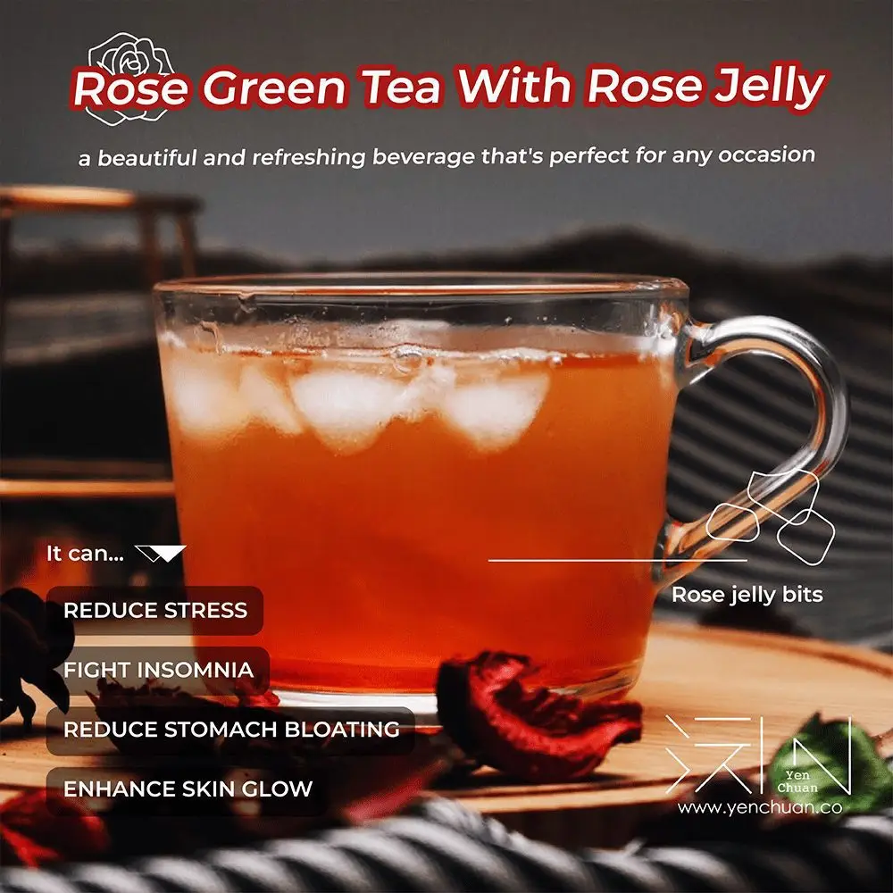

Articles / Recipes
How to make Rose green tea with rose jelly
2023-05-04 · News, Recipes

Original public content from Yen Chuan. Product claims and specifications remain subject to confirmation by the company.
Are you a fan of flowery flavours? Looking for something refreshing to cool down during summer? Look no further, try out our rose green tea with rose jelly!
Both delicious and eye-catching, this drink is great for any occasion. Let’s check it out!

Why rose green tea?
This delightful drink is the perfect marriage between the subtle, aromatic flavours of roses and green tea’s health benefits.
Want to give green tea a try, but not too keen on its savoury, bitter flavour profile? Don’t worry – the aroma and sweetness from the roses balance it out, creating a mild, relaxing drink.
With a dash of rose jelly’s mild sweetness and chewy fun, this beverage is the perfect rosy treat to enjoy anytime!
Give yourself a health boost!
What’s more, the green tea base is a treasure-trove of health benefits!
Packed with antioxidants and other goodies, green tea is a great stress-reliever, immunity boost and helps prevent cancer.
It also helps fight insomnia, reduce stomach bloating, improve skin health, soothe sore throats and much more!

Jellicious rose jelly!
What’s the best companion to rose green tea? Why, rose jelly of course!
Light, sweet and chewy, those jelly bits add a fun and exciting texture to this delicious drink.
Enhanced with the heady fragrance of freshly-cut roses, each cube perfectly captures the beauty of early summer blooms!
Ready to find your perfect summer? Roll up your sleeves, grab a glass and let’s get started!

Rose green tea with rose jelly
Refreshing and fragrant, this drink is a real treat for your taste buds.
Sip and enjoy the flavors of summer in a glass!
What you’ll need
How to make
Mix 35g rose syrup and the gelatin with 300ml water. Pour into a medium saucepan. Heat on a low flame and stir until fully dissolved. Pour into moulds.
Leave to cool, then refrigerate for at least 1 hour
Pour hot water over green tea leaves in a pitcher; brew for 10 minutes. Strain the tea leaves and stir in the remaining rose syrup
Add the rose jelly cubes, and top up with ice cubes
Give it a try!
Serve this treat to your family and friends in a hot summer afternoon – pick up the ingredients to get started!